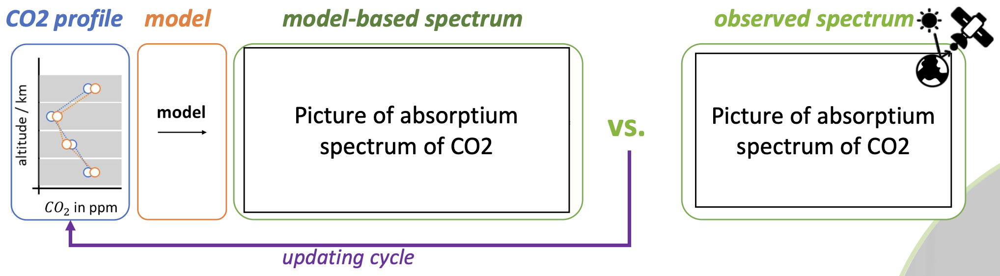
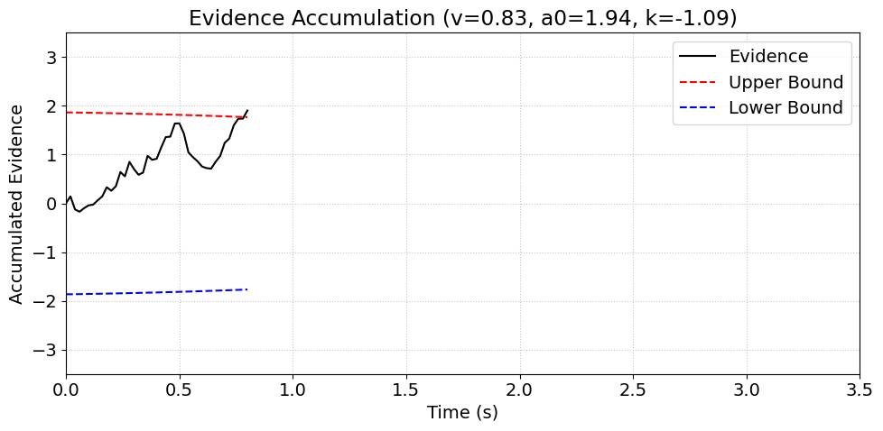
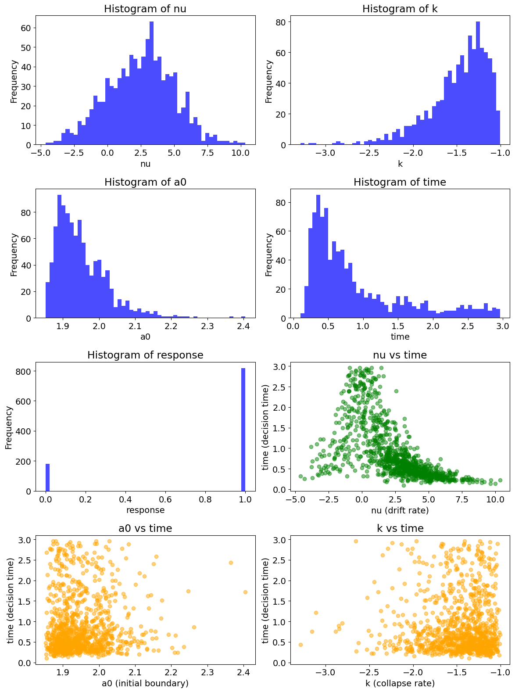
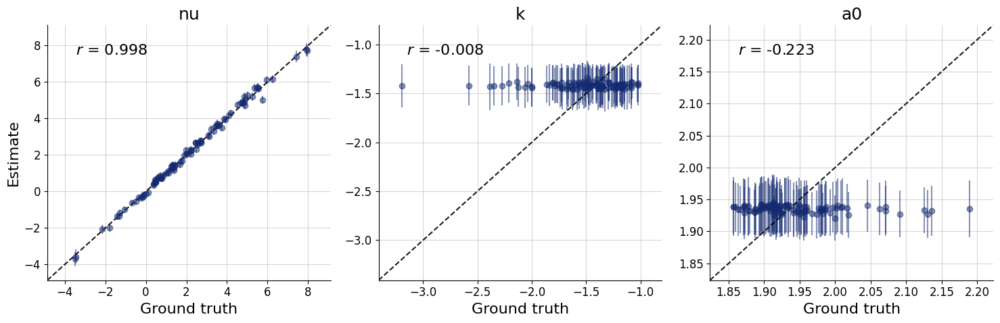
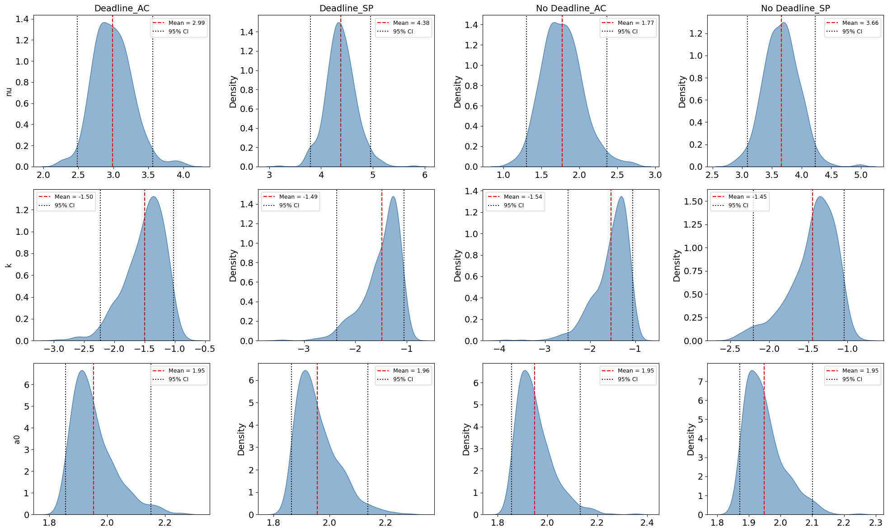

What is Simulation-Based Inference (SBI)?
Imagine you have a complex game, like a realistic flight simulator. You can easily play the game (run a simulation) to see what happens when you adjust the controls. But what if you wanted to do the opposite? What if you wanted to figure out the exact settings (the parameters) of the controls that would lead to a very specific landing pattern you observed? That's what simulation-based inference (SBI) is all about. Instead of having a neat mathematical formula for the outcome, you only have the "simulator." SBI uses a machine learning approach to work backward, taking observed data from a real-world system and finding the underlying parameters that most likely generated it.
Coming to a more real-world example, we can consider the example of measuring CO2 concentration in the atmosphere based on satellite information. These sattelites collect spectra of CO2 absorption from reflected sunlight over the globe. However, we are interested in the CO2 profile, i.e., the concentration of CO2 at different altitudes. Transport/atmospheric models along with expert knowledge are used to develop a generative model that can relate the CO2 profiles to its corresponding spectra.

The model relates the quantity of interest to the (modelled) input information. Simultaneously, we have observed output information. To get the CO2 profile information from a sattelite-based CO2 spectrum a simulation-based approach is used.
- Start with some initial CO2 profile and simulate through the model corresponding model-based spectrum.
- Measure the discrepancy between the model-based and the observed spectrum via some loss function
- Update the CO2 profile such that the discrepancy between the model- based and the observed spectrum is minimized
- Repeat the above steps until convergence
SBI is a powerful technique for estimating model parameters when the likelihood function is intractable, meaning it's impossible or very difficult to calculate. Instead of relying on complex equations, SBI leverages the power of computer simulations. We simulate data from our model using a wide range of parameter values. Then, we train a machine learning algorithm—like a neural network—to learn the relationship between the parameters we used and the data that was generated. This trained network can then take real-world data and infer the most likely parameters that produced it.
BayesFlow: Your SBI Toolkit
While SBI sounds complex, tools like BayesFlow make it accessible to researchers and developers. BayesFlow is a Python library that automates the entire SBI workflow. It uses a clever combination of neural networks to learn the intricate relationship between your model's parameters and the data it produces. Specifically, it uses a summary network to condense trial-level data into a concise format and an inference network to transform a simple distribution into a complex posterior distribution of your parameters.
This modular approach is what makes BayesFlow so powerful. It handles the heavy lifting of the neural network training, allowing you to focus on your scientific model.
To get started, you can find the official documentation and installation instructions on the BayesFlow GitHub page.
Understanding the Drift Diffusion Model (DDM)
The goal of our project is to understand how humans take decisions under time pressure (or the lack of it). For this we use a type of Evidence Accumulation Model (EAM) called the Drift Diffusion Model (DDM). EAMs are a class of cognitive models that explain how decisions are made by accumulating evidence over time until a certain threshold is reached. The DDM is particularly useful for modeling two-choice decision-making tasks, where an individual must choose between two alternatives based on noisy evidence.
Before we dive into our project, let's get a feel for what Evidence Accumulation Models are all about. Evidence accumulation models are ways to describe how people make decisions when faced with uncertain information. The idea is that your brain doesn't instantly know the answer—it collects evidence over time, like filling up a bucket, until there's enough to make a choice.
The drift diffusion model (DDM) is one of the most common versions. Imagine you’re deciding whether a blurry picture shows a cat or a dog:
- You start at a neutral point (not sure yet).
- As you look, your brain gathers small bits of evidence.
- Evidence for “cat” pushes your decision signal upward; evidence for “dog” pushes it downward.
- This “signal” drifts around because evidence can be noisy.
- When it finally hits a boundary (enough evidence for cat OR dog), you make your choice.

Mathematically, the change in accumulated evidence x over small timestep dt is given by:
$$ dx = \nu \cdot dt + s \cdot \sqrt{dt} \cdot N(0,1) $$
where \(\nu\) is the drift rate representing the average rate of evidence accumulation. The noise term N(0,1) captures random fluctuations in evidence accumulation.The decision is made when the accumulated evidence x reaches one of two boundaries: an upper boundary (for one choice) or a lower boundary (for the other choice). The distance to these boundaries represents the amount of evidence needed to make a decision. A higher boundary means more evidence is required, leading to slower but more accurate decisions. Conversely, a lower boundary allows for quicker decisions but increases the chance of errors.
The threshold used here follows an expenentially collapsing boundary, which means the amount of evidence needed to make a decision decreases over time. This models the psychological effect of urgency as a deadline approaches.
$$ a(t) = \alpha_{0} \cdot (1 - e^{k \cdot (t_{max} - t)}) $$
So, the DDM is like a noisy race between two options, where the brain’s decision emerges once enough evidence has accumulated to confidently favor one side.
Our Project: A Deep Dive into Collapsing Boundaries
While previous work found that linear collapsing boundaries fit deadline conditions better than fixed ones , we wanted to investigate if an exponentially collapsing boundary could provide an even better fit. This non-linear approach might more realistically capture how human urgency builds as time runs out.
Implementation Details
We used the BayesFlow library to implement our inference framework. The process involved:
- Statistical Modeling: We defined our DDM with three key parameters: drift rate \(\nu\), exponential decay rate (k), and initial boundary height \(\alpha_0\). We chose informative priors for these parameters based on prior research to ensure stable inference.
- Approximation: BayesFlow used a DeepSet architecture for its summary network, which is perfect for handling trial data in any order. For the inference network, we used a FlowMatching normalizing flow model, which is excellent at approximating complex, non-Gaussian posterior distributions.
- Training: We trained the model on a pre-generated dataset of 5,000 samples to save on computation, as simulating the DDM is computationally expensive. The model was trained for 50 epochs.

Key Findings and Limitations
Our results were a mix of success and challenges:

- Drift Rate Recovery: The model successfully recovered the drift rate \(\nu \), and our findings aligned with behavioral data—drift rate was highest in speed-cued conditions with deadlines. This confirms that SBI is effective at capturing dominant cognitive signals.
- Boundary Parameter Challenges: However, the exponential decay rate (k) and initial boundary height \(\alpha_0\) proved much more difficult to recover reliably. Our diagnostics showed a weak signal from these parameters, as their effects only become noticeable late in a trial, making them hard to distinguish from random noise.

This highlights a key lesson: while complex models can add psychological realism, they can also complicate inference if the parameters are not easily identifiable from the data[cite: 534].
For more details on our findings, including the ground truth vs. estimate plots and posterior distributions, you can view the full project report on my GitHub.
Conclusion
Our project demonstrates the incredible potential of Simulation-Based Inference for analyzing complex cognitive models, but also underscores the importance of parameter identifiability. Tools like BayesFlow provide a powerful framework for this work, and our findings set the stage for future research into hierarchical inference and alternative boundary formulations.
By sharing this project, we hope to provide a hands-on example of applying SBI to real-world data and inspire others to explore this exciting field of computational neuroscience and cognitive modeling.